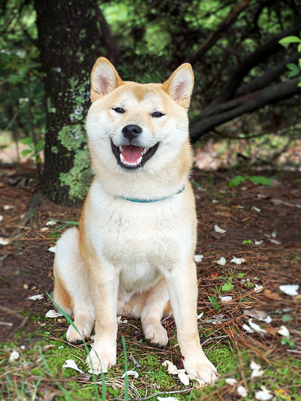
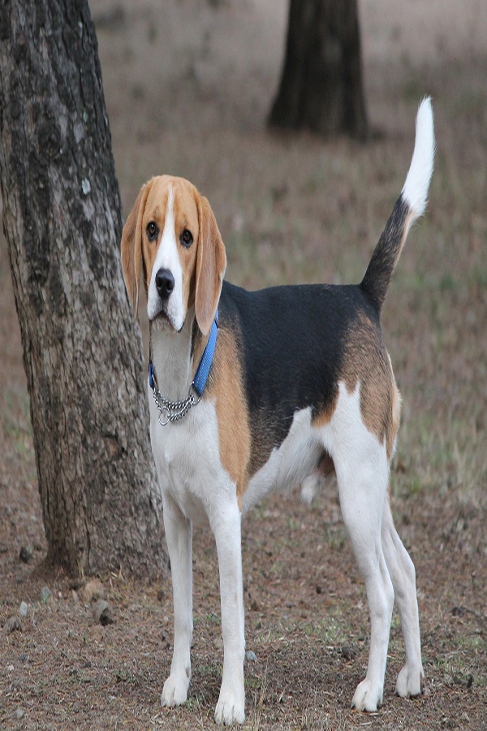
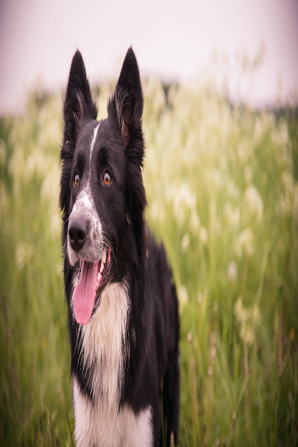
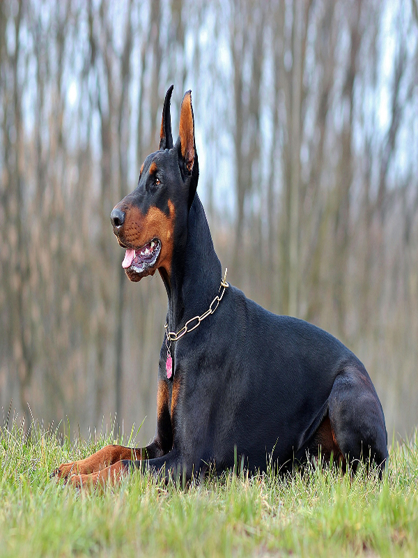

Dog Show
- 
- 
-

- 
- 
-

Akita
O Akita Inu é um dos cachorros mais antigos da história. Originária do Japão, a raça surgiu cerca de 3000 anos atrás. Alguns criadores acreditam que muitos de seus exemplares já existiam antes na Europa e, posteriormente, tiveram sua genética aprimorada pela nação oriental.
Os Akitas são grandes, imponentes, independentes e protetores. Eles comumente são usados como cães de guarda devido a essas características. Na maioria das vezes, são cachorros bastante silenciosos, que latem apenas em último caso ou quando algo chama muito a sua atenção. Hoje podemos ver vários Akitas trabalhando como cães policiais no Japão justamente pelo seu comportamento e forma de lidar com as mais variadas situações. Há quem acredite que o akita seja descendente direto dos cães spitz.
Seu tamanho, porém, é bem diferente do deles, se destacando por muito tempo como um cachorro de caça. Era comum que eles caçassem ursos e outros animais grandes na província de Akita, ilha que deu origem ao seu nome.
Beagle
Beagle ou bigle é uma raça de cães de caça de pequeno a médio porte originária do Reino Unido.
Beagles são sabujos, desenvolvidos principalmente para o rastreamento de coelhos, lebres e outros animais na caça.
Eles têm um olfato apurado e o seu instinto de rastreamento faz com que essa raça seja usada como cães farejadores em atividades como importações proibidas de produtos agrícolas e de gêneros alimentícios em quarentena em todo o mundo. Beagles são inteligentes e são populares como animais de estimação por causa de seu tamanho, temperamento e ausência de problemas de saúde genéticos.
Essas características também tornam o cão um alvo para testes em animais. Embora os cães da raça beagle existam há mais de dois mil anos, a raça moderna foi desenvolvida no Reino Unido por volta de 1830 a partir de várias raças, incluindo a talbot hound, o north country beagle, o southern hound e possivelmente o harrier.
Blue Heeler
O Australian Cattle Dog, ou Boiadeiro Australiano, é um cão pastor único e especial. Como o próprio nome já diz, essa raça surgiu na Austrália para cuidar das fazendas e do gado por lá. Dependendo da coloração da sua pelagem, ele também pode ser chamado de Blue Heeler ou Red Heeler. Heel, do inglês, quer dizer “calcanhar”, e a raça ganhou esse nome justamente pelo hábito de morder o calcanhar dos bois como forma de controlar o gado.
O Blue Heeler é uma raça excelente que se adapta muito bem ao ambiente do campo. Porém, como é muito inteligente, fiel e alerta, ele também é um ótimo cão de guarda e de companhia.
Caso você esteja pensando em ter um Blue Heeler para chamar de seu, prepare-se para uma rotina bem ativa, com passeios e brincadeiras estimulantes, pois é um animal super resistente e cheio de energia.
Border Collie
A raça ocupa o primeiro lugar no ranking mais conhecido de inteligência canina, elaborado por Stanley Coren. Além de muito esperta, a raça tem um grande instinto protetor. É muito fácil treinar um border collie: devido à união entre inteligência e afeto, ele se destaca entre muitos cachorros na capacidade de entender ordens e colocá-las em prática.
Todo mundo tem aquele amigo que gosta de reunir o grupo: no mundo canino, o border collie realiza muito bem esse papel. A raça ficou conhecida por pastorear ovelhas e auxiliar na segurança das fazendas.
E, graças a esse instinto único de proteção, conquistou não somente as grandes famílias do campo, como também caiu no gosto de todos que desejam ter um amigo de quatro patas.
Doberman
Por trás da “cara de mau”, jeito imponente e corpo forte e musculoso do doberman, existe uma personalidade bastante afetuosa, leal, companheira e muito protetora. Ele é um grande amigo para toda a família e um ótimo cão de guarda.
Também chamado de dobie e doberman pinscher, essa raça é conhecida por sua incrível inteligência e obediência. Não é à toa que esse cachorro é perfeito para atuar em resgates e como policial.
doberman é um cachorro que não costuma dar trabalho no dia a dia, como ocorre com raças que exigem banho, tosa e escovação frequentemente. Por outro lado, necessita de um nível muito elevado de exercícios físicos para manter todo o seu vigor e saúde.
Husky Siberiano
À primeira vista, sua cara de lobo e seu porte podem ser intimidadores. Mas, na verdade, o husky siberiano é amigável, gentil e sociável, além de muito trabalhador. Também conhecida como cão de trenó, essa raça foi criada com a companhia de humanos e outros animais para transportar cargas e pessoas, e ter uma convivência pacífica com todos.
Isso resultou não só em sua impressionante resistência física e vontade de trabalhar, mas também em um temperamento agradável, de boa convivência e muito extrovertido.
Originado no nordeste da Ásia, essa raça possui uma espessa camada protetora de pele e pelos, como se fosse um casaco, que o mantém quente e com uma excepcional tolerância ao frio, mesmo em temperaturas congelantes
Essas características o tornam adequado para viver em cidades de clima mais ameno.